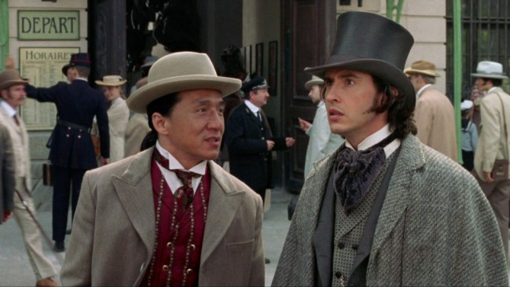
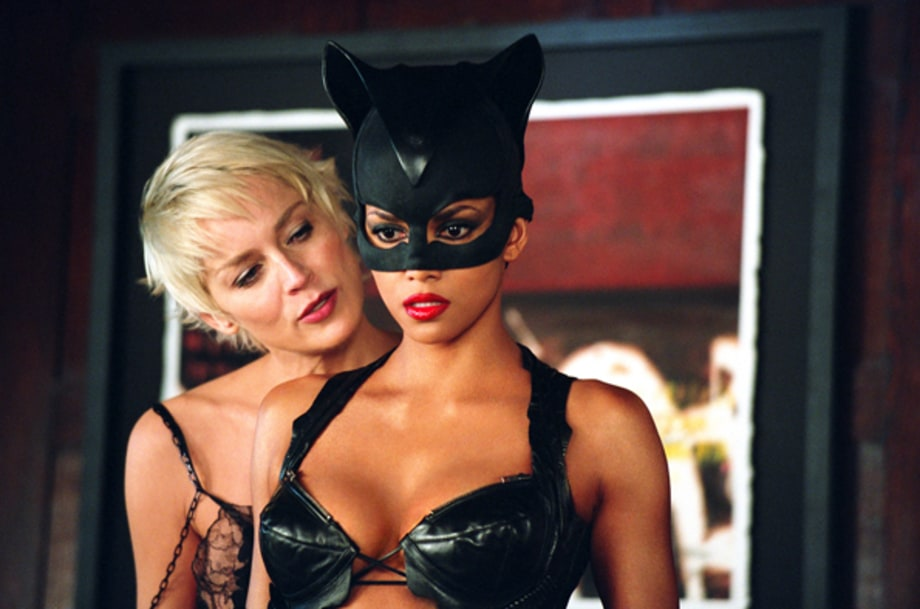

Top Bom Xịt Không Ai Muốn Nhớ - Phần 2
Bỏ ra hàng trăm triệu đô la, hội tụ những ngôi sao đình đám nhất nhưng những tác phẩm này lại trở thành nỗi cay đắng với ekip thực hiện.
7. The 13th Warrior (1999)
Kinh phí: 160 triệu USD. Doanh thu: 61 triệu USD.
John McTiernan biết cách làm thế nào để tạo ra một bộ phim tuyệt vời. Ông là người đã cho chúng ta Die Hard và Die Hard With A Vengeance. Đáng buồn thay, ông đã có một khoảng thời gian tồi tệ sau đó, ông chỉ đạo những phim tệ như Rollerball và phải vào tù vì vụ tai tiếng nghe lén điện thoại Anthony Pellicano. Trở lại năm 1999, ông đạo diễn bộ phim sử thi The 13th Warrior, dựa theo cuốn sách mang tên Eaters of the Dead của Michael Crichton. Chi phí phim lên tới 160 triệu USD và chỉ thu về 61 triệu USD, lỗ gần 100 triệu USD. Chúng ta vẫn hy vọng rằng McTiernan sẽ trở lại với bộ phim Die Hard tiếp theo. Ông ấy là người duy nhất có thể cứu vãn được thương hiệu đó.
8. Around The World In 80 Days (2004)
Kinh phí: 110 triệu USD. Doanh thu: 72 triệu USD.
Thành Long và tác giả Jules Verne có lẽ không phải là hai người mà khán giả có thể tưởng tượng đứng chung với nhau. Thế nhưng, hơn 10 năm trước, Disney cảm thấy Jackie Chan là diễn viên lý tưởng cho một bộ phim xoay quanh cuốn tiểu thuyết Around The World In 80 Days. Đây là một bộ phim quái lạ không giống với cuốn sách yêu thích và khán giả ít quan tâm. Nội dung thật kinh điển: Để giành chiến thắng trong một vụ cá cược, một nhà phát minh kỳ lạ người Anh bên cạnh người bạn Trung Quốc và một cô gái người Pháp cùng bắt tay vào chuyến đi đầy phiêu lưu và nguy hiểm trong đúng 80 ngày. Phim đã có doanh thu tổng cộng trên toàn thế giới là 72 triệu đô la với chi phí 110 triệu đô la.

9. Gigli (2003)
Kinh phí: 54 triệu USD. Doanh thu: 7 triệu USD.
Trong thập niên 2000 vừa qua, Gigli đã trở thành từ đồng nghĩa với sự ngạo mạn, thất bại và hiện tượng văn hoá ngắn ngủi mang tên "Bennifer". Bộ phim từng được kỳ vọng sẽ đem danh tiếng của Jennifer Lopez và Ben Affleck lan xa, nhưng lại làm mọi người nghi ngại, chỉ kiếm được 7 triệu đô khi ngân sách ban đầu là 54 triệu USD. Phần lớn số tiền đó đã được dùng cho cát-xê, gấp 3 lần số tiền thu được của bộ phim. Al Pacino và Christopher Walken đều có vai nhỏ, nhưng họ đã không bị ảnh hưởng. Cặp đôi “Bennifer” đã không được may mắn như vậy - nó lại một lần nữa chia tách hai người.
10. K-19: The Widowmaker (2002)
Kinh phí: 100 triệu USD. Doanh thu: 65 triệu USD.
Harrison Ford đã có một khoảng thời gian tuyệt vời từ 1977 đến 2000, nhưng từ sau đó đến nay, một điều gì đó đã biến ông trở thành hiểm họa cho phòng thu. Nhất là ở phim K-19: The Widowmaker này. Câu chuyện kể về tàu ngầm hạt nhân đầu tiên của Liên Xô bị hư hỏng trong chuyến hải hành đầu tiên ở Bắc Đại Tây Dương năm 1961. Đội tàu ngầm Mỹ chỉ huy bởi đại úy Alexi Vostrikov chạy đua với thời gian để ngăn chặn một thảm họa hạt nhân không những đe dọa cuộc sống của thủy thủ đoàn mà còn có thể là mồi lửa một cuộc chiến tranh thế giới mới. Phim có độ chính xác đáng ngờ về lịch sử do Kathryn Bigelow đạo diễn với giá 100 triệu USD. Cuối cùng, nó chỉ kiếm được 65 triệu USD trên toàn thế giới. Thảm họa này được tài trợ bởi kênh National Geographic chứ không phải là một studio lớn nên cũng không đến nỗi nào. May mắn thay, các phim chiến tranh gần đây của đạo diễn Bigelow đã tốt lên (The Hurt Locker, Zero Dark Thirty).
11. North (1994)
Kinh phí: 40 triệu USD. Doanh thu: 7 triệu USD.
Roger Ebert đã viết hơn 6.000 bài phê bình phim trong suốt bốn thập kỷ sự nghiệp của mình, và một trong những đoạn văn đáng nhớ nhất là cho bộ phim năm 1994 của Elijah Wood: "Tôi ghét bộ phim này," ông viết. "Ghét, ghét, ghét, ghét, ghét, ghét, ghét, ghét phim này. Ghét từng bối cảnh ngu ngốc trần tục của nó. Tôi ghét bất cứ ai thích nó. Ghét ngấm ngầm những ai tin rằng sẽ được giải trí bởi nó. " Việc đánh giá của Ebert trở nên nổi tiếng đến nỗi Rob Reiner thậm chí đã bị cuốn hút khi đọc vài đoạn. Cốt truyện về một cậu bé đi khắp thế giới tìm kiếm cha mẹ mới. Chú nhóc ấy đi qua một nửa Hollywood (Kathy Bates, Alan Arkin, Jason Alexander, Jon Lovitz, Bruce Willis và thậm chí là một Scarlett Johansson trẻ), nhưng bộ phim vẫn tồi tệ bao giờ hết. Ít nhất đoàn phim đã làm được một cái gì đó vì rất ít bộ phim nhận được nhiều sự ghét bỏ như thế.
12. Catwoman (2004)
Kinh phí: 100 triệu USD. Doanh thu: 82 triệu USD.
Ý tưởng về việc làm một bộ phim Catwoman rất hợp lý. Cô là một trong những nhân vật phản diện nổi tiếng nhất trong bất kỳ cuốn truyện tranh nào, và vai diễn Catwoman của Michelle Pfeiffer trong phim Batman Returns (1992) trước đó thật tuyệt vời. Nhưng Pfeiffer đã không ký hợp đồng để tiếp tục vào vai con mèo này, do nhà làm phim người Pháp Monofloron cầm trịch. Vinh dự đó đã đến Halle Berry, người đoạt giải thưởng Nữ diễn viên xuất sắc nhất cho phim Monster's Ball (2001). Với chi phí tiếp thị khổng lồ, Catwoman kiếm được tổng cộng 82 triệu USD trên ngân sách 100 triệu USD. Bản thân Berry thì nhận Giải Mâm xôi Vàng cho nữ diễn viên tồi nhất, sau giải Oscar năm 2001. "Tôi muốn cảm ơn hãng Warner Bros.," cô nói. "Cám ơn đã đưa tôi vào một bộ phim kinh dị khủng khiếp, đó là điều cần cho sự nghiệp của tôi. Tôi đã ở trên đỉnh cao, và rồi Catwoman đẩy tôi xuống tận đáy".

13. Battlefield Earth (2000)
Kinh phí: 73 triệu USD. Doanh thu: 30 triệu USD.
Dù gì đi chăng nữa, bạn cũng không thể cho rằng John Travolta đã làm ra một bộ phim đáng xem, bởi vì nó được dựa trên cuốn sách do nhà sáng lập ngành khoa học L. Ron Hubbard viết ra. Travolta có thể thậm chí không biết rằng Hubbard đã viết Battlefield Earth. Anh ấy chỉ muốn làm một bộ phim nhỏ về cuộc chiến giữa nhân loại với người ngoài hành tinh vào năm 3000 và khiến tất cả mọi người phải lao vào đánh giá. Xưởng phim đã chi 73 triệu USD cho Battlefield Earth và chỉ thu về 30 triệu USD. Travolta đã gần lấy lại phong độ đỉnh cao trong khoảng thời gian này, nhưng bộ phim thảm họa khiến anh ta “rớt giá” nhẹ.
14. Evan Almighty (2007)
Kinh phí: 175 triệu USD. Doanh thu: 173 triệu USD
Bộ phim Bruce Almighty do Jim Carrey đóng vai chính năm 2003 thu về gần 500 triệu đô la, nên việc sản xuất phần tiếp theo là không thể tránh khỏi - ngay cả khi Carrey và bạn anh - Jennifer Aniston, từ chối đóng tiếp. Xưởng phim thay vào đó là Steve Carrell, Morgan Freeman và Lauren Graham, với một câu chuyện con tàu của Noah thời nay. Nhân vật chính của bộ phim là nghị sĩ Evan Baxter, người được Thượng Đế chọn để làm một con tàu Noah thời hiện đại. Sự nghiệp bị mất, gia đình rời bỏ, truyền thông cười nhạo, nhưng Evan vẫn phải làm… Ngân sách bộ phim tăng lên đến mức điên rồ để phục vụ các hiệu ứng đặc biệt cần thiết. Vào thời điểm đó, đây là bộ phim hài đắt đỏ nhất từng được sản xuất. Các nhà phê bình đã đánh giá rất tiêu cực, studio thậm chí phải đối phó với cáo buộc rằng những con tinh tinh đã bị lạm dụng trong quá trình sản xuất. Đừng mong đợi một bộ phim Almighty thứ ba.
15. The Avengers (1998)
Kinh phí: 60 triệu USD. Doanh thu: 48 triệu USD.
Mười chín năm trước, không liên quan tới những siêu anh hùng Marvel của Hollywood, một bộ phim dở tệ mang tên The Avengers đã xuất hiện ở rạp chiếu phim. Nội dung cực kỳ đơn giản: Hai điệp viên Anh cố gắng ngăn chặn Sir August de Wynter hủy diệt thế giới bằng cỗ máy thay đổi thời tiết của ông ấy. Đây là một sự chuyển thể của những bộ phim truyền hình Anh năm 1960 với sự tham gia của Ralph Fiennes và Uma Thurman. Dù bộ phim gây chú ý trong ngày vài đầu, khiến vài người bên ngoài nước Anh biết tên những nhân vật nhưng bộ phim vẫn nhận được một giải Mâm xôi vàng cho phim dở nhất.